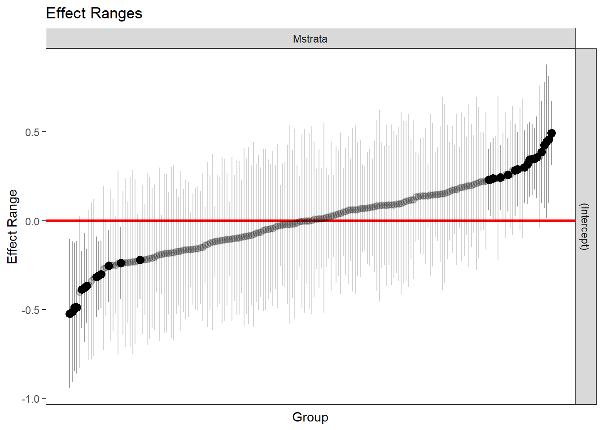
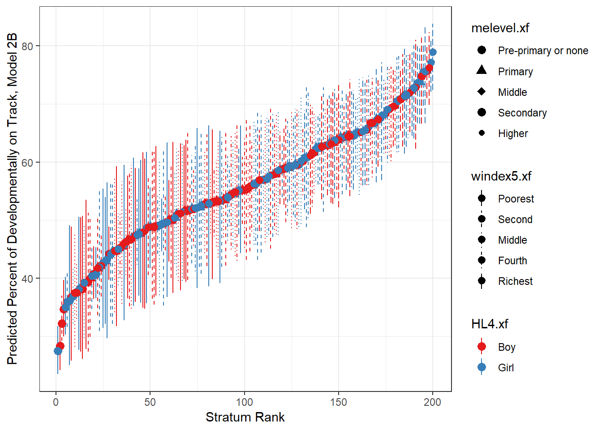

Chapter 4 MAIHDA IIa: Modelling.A
In this document I model the probability of being developmentally on track.
4.1 Model Results
Model 1: The outcome modelled based on strata group Model 2: Model 1 + adjustment by all variables used to define the strata.
Code
#For Rmarkdown##########
rm(list=ls())
setwd("D:/ainhoa ugarteche/MICS/Exploratory_20250325")
data<-readRDS("DATA/Created_Datasets/PakistantDataVarsMAIHDAModelling_20250425.rds")
# load packages used in this tutorial
library(haven)
library(tidyverse)
library(ggeffects)
library(lme4)
library(merTools)
library(labelled)
library(sjPlot)
library(Metrics)
#A) RUN MAIHDA#########
#1. Summarize all model estimates
#Random effects model
str(data$ECDIf)#Converted into a fator in previous data prep script. ## Factor w/ 2 levels "Not Dev.on.Track",..: 2 1 1 2 1 2 1 2 1 1 ...Code
model2A <- glmer(ECDIf ~ (1|Mstrata), data=data, family=binomial)
#Additive effects model
model2B <- glmer(ECDIf ~ melevel.xf+ HL4.xf
+ windex5.xf + Region +
(1|Mstrata), data=data, family=binomial)
#1.1:Table including the Variance Partitioning Coefficients (VPC)
#OUTPUT:::###
tab_model( model2A, model2B, p.style="stars")| ECDIf | ECDIf | |||
|---|---|---|---|---|
| Predictors | Odds Ratios | CI | Odds Ratios | CI |
| (Intercept) | 1.27 *** | 1.17 – 1.38 | 0.42 *** | 0.34 – 0.51 |
|
Mother’s Education: Primary |
1.31 *** | 1.14 – 1.51 | ||
|
Mother’s Education: Middle |
1.43 *** | 1.22 – 1.68 | ||
|
Mother’s Education: Secondary |
1.43 *** | 1.22 – 1.67 | ||
|
Mother’s Education: Higher |
1.60 *** | 1.36 – 1.89 | ||
| Child’s Sex: Girl | 1.10 | 0.99 – 1.21 | ||
| Wealth Index: Second | 1.29 ** | 1.07 – 1.54 | ||
| Wealth Index: Middle | 1.46 *** | 1.23 – 1.75 | ||
| Wealth Index: Fourth | 1.95 *** | 1.64 – 2.32 | ||
| Wealth Index: Richest | 2.63 *** | 2.19 – 3.15 | ||
| Region | 1.14 *** | 1.09 – 1.20 | ||
| Random Effects | ||||
| σ2 | 3.29 | 3.29 | ||
| τ00 | 0.27 Mstrata | 0.07 Mstrata | ||
| ICC | 0.08 | 0.02 | ||
| N | 200 Mstrata | 200 Mstrata | ||
| Observations | 42382 | 42382 | ||
| Marginal R2 / Conditional R2 | 0.000 / 0.077 | 0.062 / 0.083 | ||
|
||||
The percent change in variance between model 1 & model 2 is..
Code
#1.2:Calculate the Proportional Change in Variance (PCV) (as a percentage) for models 1 and 2
# Extract variance matrices from the model objects
vc2a <-as.data.frame(VarCorr(model2A))
vc2b <-as.data.frame(VarCorr(model2B))
# Calculate PCVs using components of these variance matrices (as percentages)
PCV2 <- ((vc2a[1,4] - vc2b[1,4]) / vc2a[1,4])*100
PCV2 #100## [1] 72.75081Code
################
#2: Random effects model: Output parameters#########
#So no problem with prediction making: Remove 3 individuals with missing data in mother's education.
data<-data%>%filter(!is.na(melevel.xf))
#2.1:Predict estimates
data$m2Axbu <- predict(model2A, type="response") #(Probability scale)
#Predict fixed portion: the weighted grand mean probability
data$m2Axb <- predict(model2A, type="response", re.form=NA) #re: random effectsCode
################
#3: Additive effects model: Output parameters:##########
#3.1:Predict estimates. There are some versions of estimates here so we will label them.
#a. Overall estimates with CI
#probability scale
m2Bm_prob <- predictInterval(model2B, level=0.95, include.resid.var=FALSE,
type="probability") #Combined uncertainty of fixed and random parts
m2Bm_prob <- mutate(m2Bm_prob, id=dplyr::row_number()) #Create & Include ID variable
#logit scale
m2Bm <- predictInterval(model2B, level=0.95, include.resid.var=FALSE)
m2Bm <- mutate(m2Bm, id=dplyr::row_number())
#b.Fixed portion (stored in data)
data$m2Bxb <- predict(model2B, re.form=NA, type="response") #(Probability scale)
data$m2BmF <- predict(model2B, re.form=NA) #(Logit scale)4.2 Random effects plot
Code

We can see that many groups on the extremes have a predicted probability of the developmental score that significantly deviates from the Grand mean in the population. This suggests that the predicted developmental score for these groups may not be entirely explained by populational average tendencies. Being part of such groups could be producing singular effects on the child’s developmental scores.
4.3 Strata-level results
Using some code not included in this page, I create strata-level results with predictions, estimates, for each strata. Below I describe an overview of these outputs:
4.3.1 Data size of each strata
Code
setwd("D:/ainhoa ugarteche/MICS/Exploratory_20250325")
#Load data & libraries
stratum_level<-readRDS("DATA/StratLevelRes20250428.rds")
library(dplyr)
library(ggplot2)
##############
#1. Stratum size descriptives###########
#5.1: Create binary indicators for whether each stratum has more than X individuals
summary(stratum_level$strataN)## Min. 1st Qu. Median Mean 3rd Qu. Max.
## 2.0 30.0 76.5 211.9 227.2 1754.0Code
stratum_level$n100plus <- ifelse(stratum_level$strataN>=100, 1,0)
stratum_level$n50plus <- ifelse(stratum_level$strataN>=50, 1,0)
stratum_level$n30plus <- ifelse(stratum_level$strataN>=30, 1,0)
stratum_level$n20plus <- ifelse(stratum_level$strataN>=20, 1,0)
stratum_level$n10plus <- ifelse(stratum_level$strataN>=10, 1,0)
stratum_level$nlessthan10 <- ifelse(stratum_level$strataN<10, 1,0)
#Tabulate the binary indicators
# table(stratum_level$n100plus)
# table(stratum_level$n50plus)
# table(stratum_level$n30plus)
# table(stratum_level$n20plus)
# table(stratum_level$n10plus)
# table(stratum_level$nlessthan10)
#Data.frame avec ces resultatst
#OUTPUT####
table<-data.frame(
desc=c("100 or less",
"50 or less",
"30 or less",
"20 or less",'10 or less'),
num=c(table(stratum_level$n100plus)[[1]],
table(stratum_level$n50plus)[[1]],
table(stratum_level$n30plus)[[1]],
table(stratum_level$n20plus)[[1]],
table(stratum_level$n10plus)[[1]]
))
print(table)## desc num
## 1 100 or less 119
## 2 50 or less 78
## 3 30 or less 47
## 4 20 or less 35
## 5 10 or less 14There are 35 strata with 20 or less individuals. MAIHDA corrects for estimates of strata of small size by bringing the their values closer to the population Grand mean. Despite this correction that prevents outlier results, hard to interpret because they are suspected to be a product of small statiscal power for estimation, we fear that not all these corrections are not sufficient to provide reliable & transferable results.
Because of this, it would be good to consider an alternative design that reduces the number of strata with such small sample sizes.
4.3.2 Plot Predicted Stratum Means
Code
#Include rank variable
stratum_level <- stratum_level %>%
mutate(rank2=rank(m2Bmfit))
# Convert probabilities of outcome to percentages
stratum_level$m2Bmfit <- stratum_level$m2Bmfit * 100
stratum_level$m2Bmupr <- stratum_level$m2Bmupr * 100
stratum_level$m2Bmlwr <- stratum_level$m2Bmlwr * 100
#2.1: Plot predicted stratum means based on rank: caterpillar plot
# Color code points in plot
ggplot(stratum_level, aes(x = rank2, y = m2Bmfit)) +
# Points differentiated by color and shape
geom_point(aes(color = HL4.xf , shape = melevel.xf), size = 3) +
# Error bars differentiated by color and linetype
geom_pointrange(aes(
ymin = m2Bmlwr, ymax = m2Bmupr,
color = HL4.xf,
linetype = windex5.xf
)) +
# Axis labels
xlab("Stratum Rank") +
ylab("Predicted Percent of Developmentally on Track, Model 2B") +
# Theme for better visuals
theme_bw() +
# Customize legends
theme(legend.position = "right") +
# Add optional scales for customization
scale_color_brewer(palette = "Set1") + # Custom color palette
scale_shape_manual(values = c(16, 17, 18,19,20)) + # Custom shapes
scale_linetype_manual(values = c("solid", "dashed", "dotted", "dotdash", "longdash"))
4.3.3 List 6 highest/lowest predicted stratum means
6 highest stratum means
## melevel.xf HL4.xf windex5.xf Region Mstrata strataN m2Bmfit m2Bmupr m2Bmlwr m2BmfitL m2BmuprL m2BmlwrL
## 2 Pre-primary or none Girl Poorest 1 1211 1254 27.49339 31.75110 23.49179 -0.9660778 -0.7684670 -1.1759727
## 1 Pre-primary or none Boy Poorest 1 1111 1391 28.33464 32.59008 24.21843 -0.9364041 -0.7241848 -1.1376347
## 5 Pre-primary or none Boy Second 1 1121 1155 32.24476 36.98900 27.98318 -0.7406076 -0.5370438 -0.9259411
## 15 Pre-primary or none Boy Poorest 4 1114 1092 34.70335 39.66566 30.01149 -0.6324237 -0.4160367 -0.8549323
## 22 Pre-primary or none Girl Poorest 4 1214 965 34.99526 40.23515 30.27453 -0.6167781 -0.3864896 -0.8202291
## 8 Pre-primary or none Girl Second 1 1221 1086 35.91273 41.12950 31.57223 -0.5630537 -0.3380764 -0.7791972
## m2BmF ECDIf n100plus n50plus n30plus n20plus n10plus nlessthan10 rank2
## 2 -0.6522737 27.11324 1 1 1 1 1 0 1
## 1 -0.7436182 28.03738 1 1 1 1 1 0 2
## 5 -0.4922521 32.12121 1 1 1 1 1 0 3
## 15 -0.3525079 34.24908 1 1 1 1 1 0 4
## 22 -0.2611633 34.50777 1 1 1 1 1 0 5
## 8 -0.4009076 36.00368 1 1 1 1 1 0 66 lowest stratum means
## melevel.xf HL4.xf windex5.xf Region Mstrata strataN m2Bmfit m2Bmupr m2Bmlwr m2BmfitL m2BmuprL m2BmlwrL m2BmF
## 190 Secondary Girl Richest 3 4253 292 75.43304 80.11385 69.72454 1.122079 1.412274 0.8219938 0.9301261
## 198 Middle Girl Richest 4 3254 42 75.64240 83.31845 66.64800 1.138665 1.622562 0.6436845 1.0624704
## 192 Higher Boy Richest 3 5153 485 75.65189 79.96377 70.98655 1.111787 1.383457 0.8638820 0.9543265
## 199 Higher Boy Richest 4 5154 187 76.23041 82.33229 69.85941 1.138292 1.505879 0.8125453 1.0846966
## 196 Higher Girl Richest 3 5253 484 77.17353 81.10516 72.04890 1.201315 1.465551 0.9533065 1.0456710
## 200 Higher Girl Richest 4 5254 165 78.91915 83.77932 72.41963 1.319432 1.684299 0.9553736 1.1760411
## ECDIf n100plus n50plus n30plus n20plus n10plus nlessthan10 rank2
## 190 76.36986 1 1 1 1 1 0 195
## 198 78.57143 0 0 1 1 1 0 196
## 192 75.87629 1 1 1 1 1 0 197
## 199 76.47059 1 1 1 1 1 0 198
## 196 77.47934 1 1 1 1 1 0 199
## 200 80.00000 1 1 1 1 1 0 200